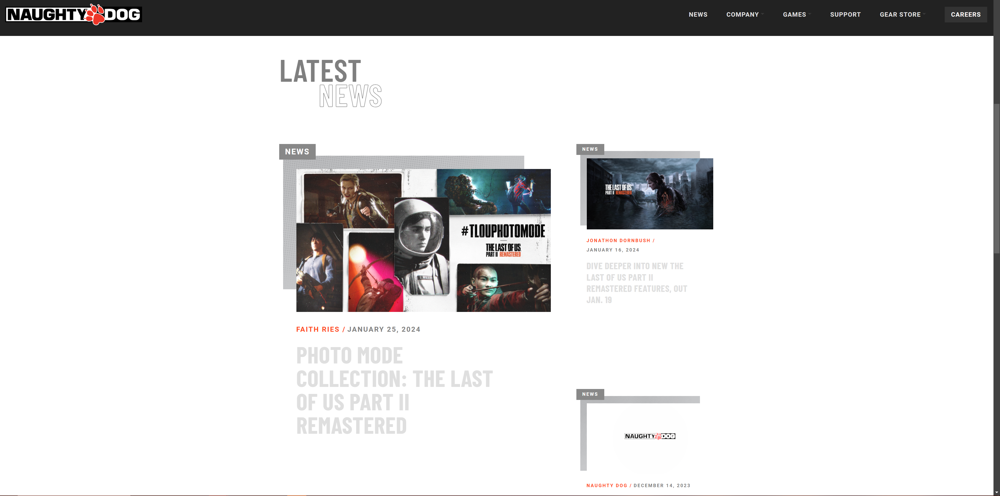
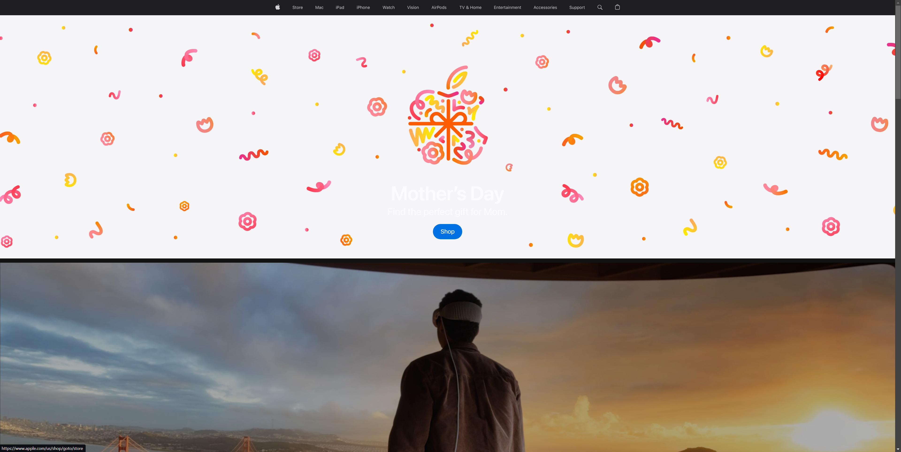

Rule of Thirds
Square Enix

The website for Square Enix uses the Rule of Thirds by dividing the layout of the page into thirds both horizontally and vertically in order to display information. Information such as key characters and announcements are placed at or near the intersections of these dividing lines making the design appealing for the user.
White Space and Clean Design
Naughty Dog
The website for Naughty Dog uses whitespace to show information on specific games that they have recently released, any news that they post relating to game titles that are getting announced or news about the company itself.
Visual Hierarchy
Naughty Dog
The website for Apple uses Visual Hierarchy in order to guide the viewer's attention. In this picture, the central focus of this picture is the apple logo that's redesigned with a floral motif for Mother's Day. It's placed in the center of the screen and serves as the main focus point. It also uses bold typography to make it stand out and a call to action button that allows the user to take action.